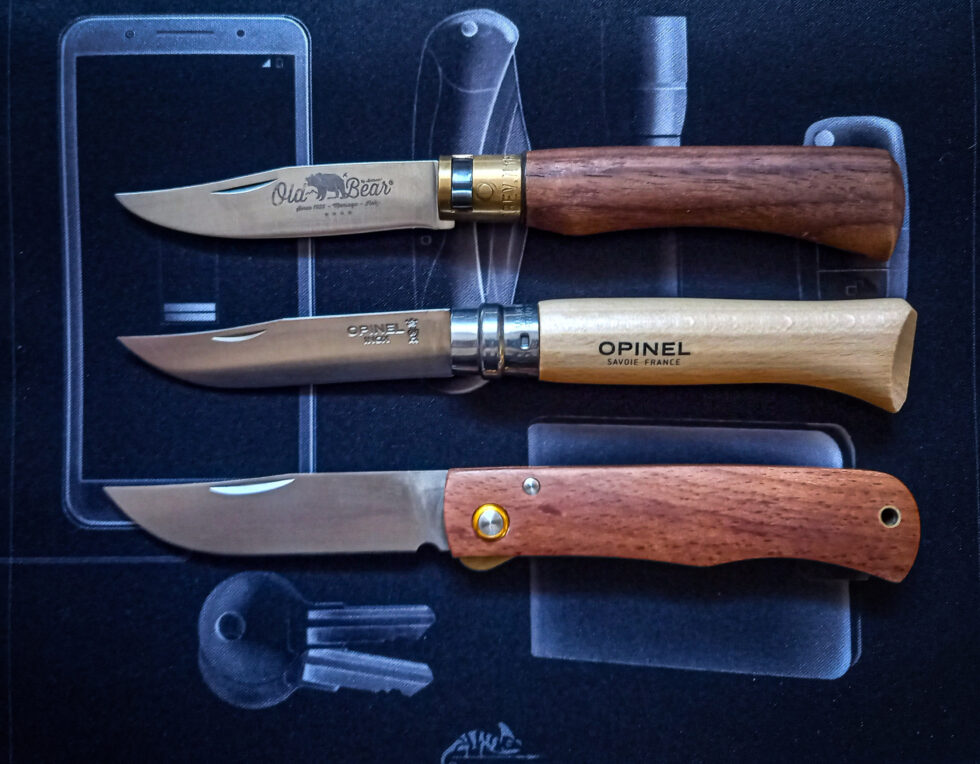

Trimágus tusa
VaszilijEdc Ultras módon.
Megrendezésre kerül a Trimágus Tusa VaszilijEdc Ultras módon. A versenyzők a kések budget vonalából kerülnek ki. A cél legyőzni az Opinel N°08-at, ha ez lehetséges. Az Opinelhez fűződő viszonyom olyan „se veled, se nélküled”. Elismerem a használhatóságát és értem,...